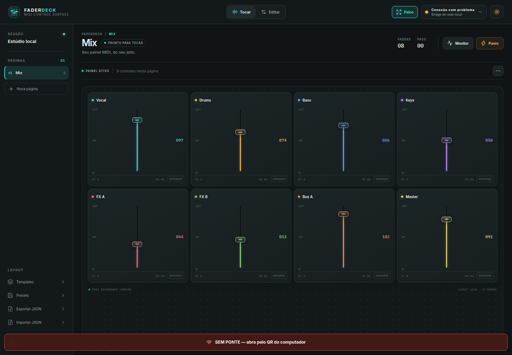

Ajuste o que importa.
Use faders como controles MIDI para parâmetros da sua DAW, conforme o mapeamento configurado no seu fluxo de trabalho.
Transforme seu celular em uma superfície de controle para comandar os recursos da sua DAW de maneira prática e intuitiva.
Leve os controles que você usa para perto do instrumento, do computador ou do palco.
Use faders como controles MIDI para parâmetros da sua DAW, conforme o mapeamento configurado no seu fluxo de trabalho.
Monte páginas com faders para o seu uso. Os layouts permanecem salvos neste computador.
Na mesma rede local, use o QR exibido pelo aplicativo para abrir o painel no navegador do celular. Redes com isolamento podem impedir a comunicação.

A configuração de MIDI depende do sistema. No Windows, é preciso instalar e manter o loopMIDI aberto para a porta virtual. No Mac, o FaderDeck cria a porta automaticamente.
Ver guia de instalação do Windows ↗Escolha a versão compatível com seu computador.
No Windows, instale e abra o loopMIDI. No Mac, a porta é criada pelo aplicativo.
Deixe computador e celular na mesma rede, sem isolamento entre eles.
Escaneie o QR exibido pelo FaderDeck e abra o endereço no navegador.
Habilite a entrada MIDI e associe os controles aos parâmetros desejados.
O FaderDeck envia MIDI. A compatibilidade prática depende das entradas MIDI e dos recursos de mapeamento da DAW escolhida.
O instalador disponível é x64. Para criar a porta MIDI virtual, instale o loopMIDI e mantenha o loopMIDI em execução. O fornecedor não confirma compatibilidade com Windows 11 para o loopMIDI.
Ver instalação passo a passo ↗O instalador Universal requer macOS Ventura 13 ou posterior. Para Monterey 12, há instalador separado somente para Mac Intel; não há instalador Monterey para Apple Silicon.
No Mac, o FaderDeck cria a porta automaticamente.
Os botões levam aos instaladores existentes. Requisitos e limitações estão descritos acima.
Windows 64-bit · macOS Universal · Monterey Intel.
Somente para Mac Intel. Não funciona em Apple Silicon; o Universal acima requer macOS Ventura 13 ou posterior.
Somente Mac Intel (x86_64) com macOS 12 Monterey; não funciona em Apple Silicon.
As opções abaixo representam a proposta comercial. Teste, compra e ativação ainda não estão disponíveis nesta etapa.
7 dias
A proposta prevê acesso às funcionalidades completas durante sete dias.
Disponibilidade pendenteR$ 30,00
Pagamento único, conforme a oferta planejada. Forma de compra e ativação ainda serão definidas.
Compra ainda não disponívelInformações comerciais aguardam implementação e confirmação antes de serem oferecidas ao público.
Respostas baseadas no funcionamento e nos requisitos documentados do FaderDeck.
Um painel de controle MIDI com faders, para uso no computador ou no navegador do celular.
Não há aplicativo móvel mencionado na documentação. O painel do celular é aberto pelo navegador, usando o QR exibido pelo aplicativo.
Há instalador para Windows 64-bit e instaladores para macOS. No Mac, o Universal requer macOS 13+; Monterey 12 tem opção apenas para Intel. No Windows, é necessário manter o loopMIDI ativo para a porta virtual.
É uma oferta planejada, ainda indisponível. O processo de início, elegibilidade e encerramento precisa ser confirmado antes do lançamento. Revisar antes de publicar.
Para usar o painel pelo celular, computador e celular precisam estar na mesma rede local e sem isolamento entre dispositivos. Redes de convidados podem bloquear a conexão.
A compra e o processo de ativação ainda não existem. O método de ativação está pendente de definição. Revisar antes de publicar.
Por enquanto, o suporte documentado contempla ChurchDAW e Kontakt. Outros softwares podem não ter instruções ou compatibilidade confirmada nesta versão.
O guia de Windows está disponível nesta página. Um canal de suporte e páginas legais ainda não foram informados. Adicionar contato e links legais antes do lançamento comercial.
Experimente grátis por 7 dias — assim que a avaliação estiver disponível.
Conhecer as ofertas planejadasEscolha uma senha com pelo menos 8 caracteres para sua conta FaderDeck.